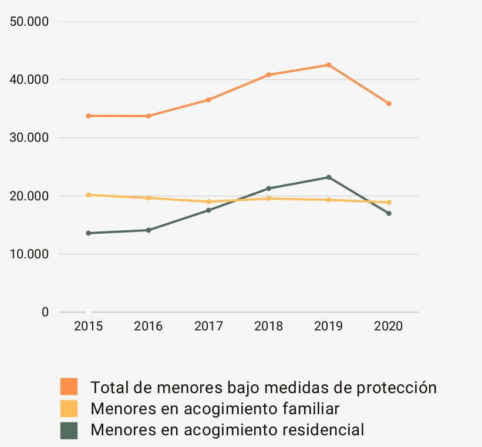

35.883
niños, niñas y adolescentes han sido atendidos en 2020 por el sistema de protección a la infancia en España. Aproximadamente la mitad, 16.991, viven en acogimiento residencial.
niños, niñas y adolescentes han sido atendidos en 2020 por el sistema de protección a la infancia en España. Aproximadamente la mitad, 16.991, viven en acogimiento residencial.
El número de niños, niñas y adolescentes bajo medidas de protección no ha dejado de crecer desde el año 2015.
En el año 2018, el número de menores en acogimiento residencial superó por primera vez al de menores viviendo con una familia de acogida.
El Acogimiento Familiar es una medida de protección para niños y niñas cuyos padres, por circunstancias graves personales o sociales, no pueden hacerse cargo de ellos y pasan a integrarse en una familia de acogida.
Las familias de acogida hacen posible que puedan crecer con una familia que les cuida, acompaña y quiere durante el tiempo que sea necesario.
Veinte años trabajando para hacer realidad el derecho de todos los niños, niñas y adolescentes a crecer en familia.
ASEAF nace en el año 2001 con la unión de asociaciones de familias acogedoras.
En la actualidad agrupamos a 21 asociaciones y estamos presentes en 12 Comunidades Autónomas.
Representamos a más de 1.500 familias acogedoras y trabajamos por los derechos de los niños y niñas bajo medida de protección.
Llevamos a cabo nuestra actividad en torno a 4 ejes de actuación.
Apoyo a las familias acogedoras.
Coordinación entre las diferentes asociaciones autonómicas.
Interlocución con las AAPP
Crear cultura de acogimiento mediante la difusión, sensibilización y concienciación social.
Para saber más, visita nuetra web aseaf.org
Visitar